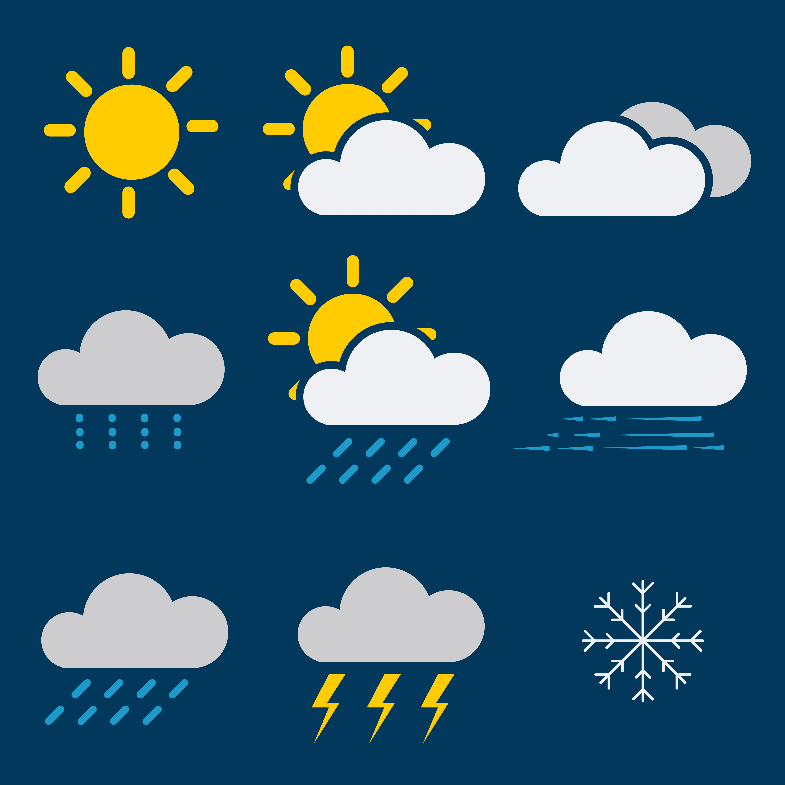
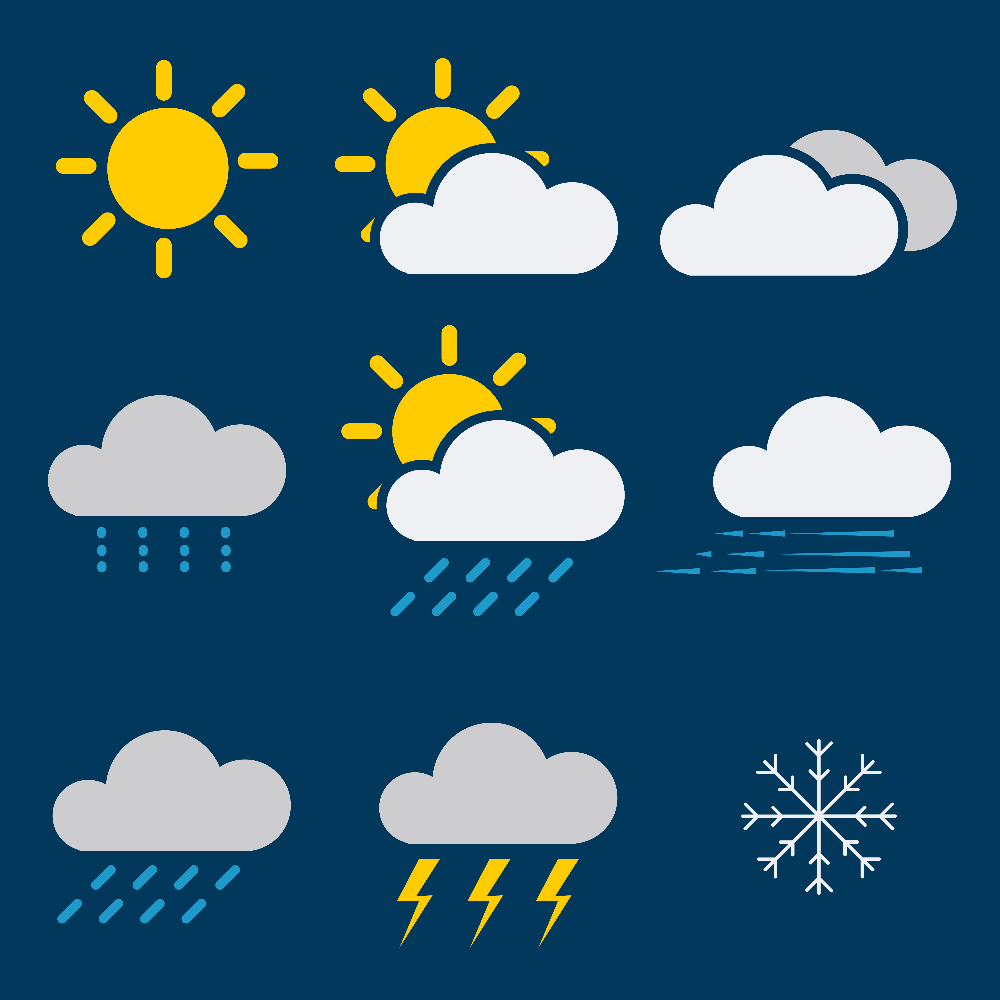

BATULILE NTSETHE
DOWNLOAD CV
2 herb street new Doornfontein Johannesburg 2093
0734793858|batulilentsethe@gmail.com
Detail-oriented and technically proficient System Development student with a strong foundation in programming languages and software applications. Adept at problem-solving, learning new technologies, and applying logical thinking to create efficient solutions. Possesses a Technical Support Certificate, coupled with a passion for continuous learning and professional growth within the technology sector. Eager to contribute to innovative projects and collaborate with a dynamic team.